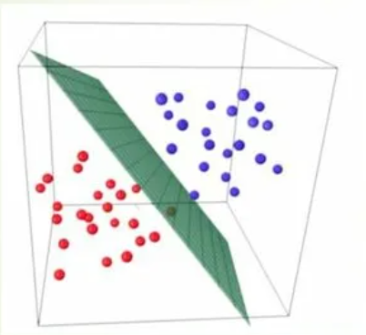
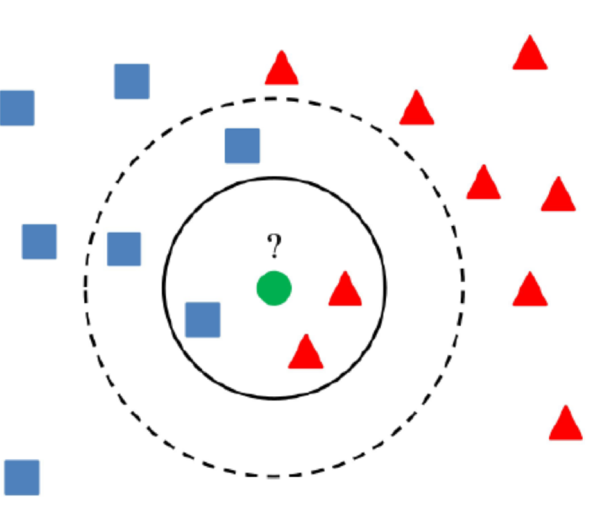
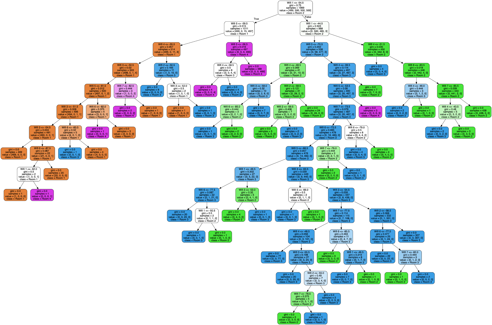
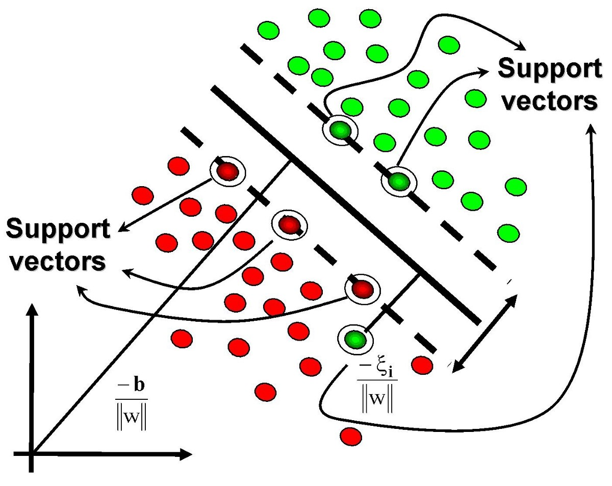
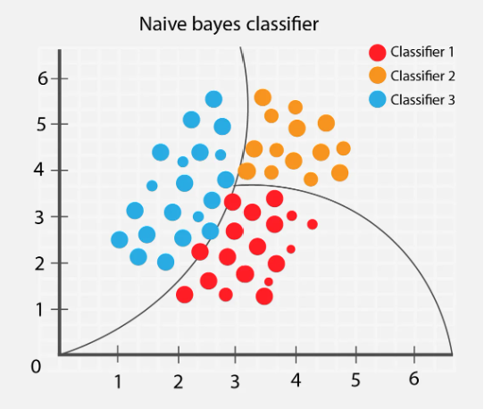
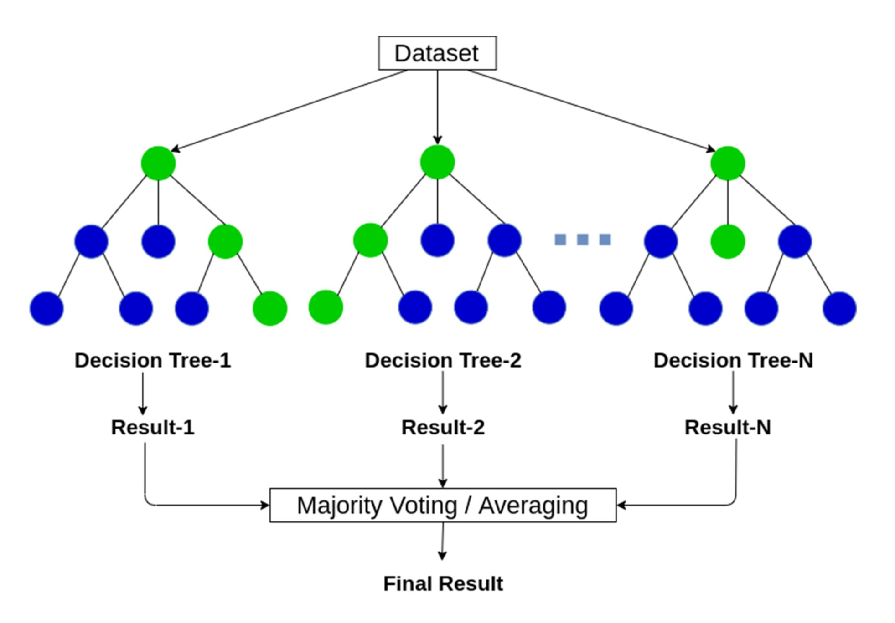

|  |
Логистическая регрессия |
Логистическая регрессия используется для решения задач бинарной классификации, где предсказывается
вероятность принадлежности объекта к одному из двух классов. |
Простота реализации, хорошая интерпретируемость результатов, эффективность на больших объемах
данных. |
Не способна моделировать сложные зависимости между признаками. |
O(n) |
|  |
K-Nearest Neighbors (KNN) |
KNN относит объект к классу, основываясь на классах его ближайших соседей. Количество ближайших
соседей (K) выбирается заранее. |
Простота реализации, способность моделировать сложные зависимости между признаками, хорошая
обобщающая способность. |
Высокая вычислительная сложность при большом количестве объектов в выборке. |
O(n) |
|  |
Decision tree |
Решающее дерево строит последовательность вопросов по признакам, чтобы классифицировать объекты.
Каждый узел дерева представляет собой вопрос по одному из признаков. |
Хорошая интерпретируемость результатов, способность моделировать сложные зависимости между
признаками, устойчивость к выбросам |
Тенденция к переобучению, сложность построения и обучения на больших объемах данных. |
O(n) |
|  |
Support Vector Machines, SVM |
SVM строит гиперплоскость в многомерном пространстве, которая максимально разделяет объекты разных
классов. |
Эффективность на данных с большим количеством признаков, способность моделировать сложные
зависимости между признаками, устойчивость к выбросам. |
Трудность интерпретации результатов, сложность выбора оптимальных параметров модели. |
O(n^2) |
|  |
Наивный Байесовский классификатор: |
Байесовский классификатор основан на теореме Байеса и предполагает независимость признаков.
Классификация происходит путем вычисления вероятности принадлежности объекта к каждому классу. |
Простота реализации, хорошая обобщающая способность, эффективность на больших объемах данных. |
Предположение о независимости признаков может быть неверным. |
O(n) |
|  |
Random Forest |
Случайный лес состоит из множества решающих деревьев, каждое из которых обучается на подвыборке
данных. Классификация происходит путем голосования деревьев. |
Хорошая обобщающая способность, устойчивость к переобучению, способность моделировать сложные
зависимости между признаками. |
Трудность интерпретации результатов, сложность обучения на больших объемах данных. |
O(n) |